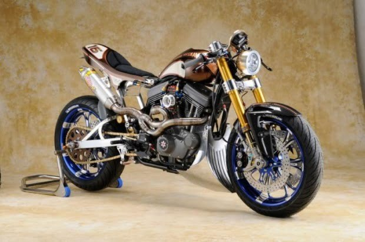

Esta moto es una edición limitada, tan solo 13 unidades en el mundo, posee un potente motor de 250 caballos de fuerza, además está fabricada con titanio, fibra de carbono y materiales usados en la MotoGP. Su precio, tan solo 230 mil euros, clasificando entre las motos más caras del mundo y su valor se justifica por su proceso de fabricación artesanal y su enfoque hacia los procesos y materiales de la industria aeronáutica y la automoción.
